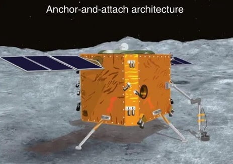
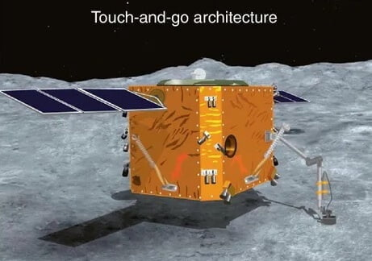
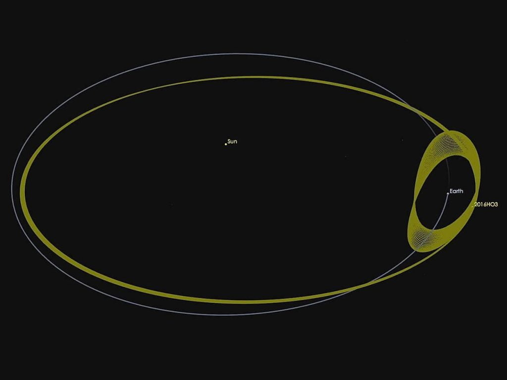

ဒီ ဥက္ကာပျံက ကျောက်တွေဟာ နေအဖွဲ့အစည်း စတင် ဖြစ်တည်တဲ့ အချိန်ကတဲက ကျန်ခဲ့တဲ့ ကျောက်သားတွေလို့ ပညာရှင်တွေက ယူဆကြပါတယ်။ ဒါ့ကြောင့်လဲ ဒီဥက္ကာပျံကို သိပ္ပံ ပညာရှင်တွေက စိတ်ဝင်စားကြတာ ဖြစ်ပါတယ်။
ဒီ ဥက္ကာပျံ ဖမ်းမယ့် အာကာသ ပျံသန်းမှုဟာ ယခင်က အလားတူ အာကာသ လေ့လာရေး အစီအစဉ်တွေ ဖြစ်တဲ့ ဂျပန်ရဲ့ Hayabusa 1 နဲ့ 2 အာကာသ ယာဉ်တွေနဲ့ NASA နာဆာရဲ့ OSIRIS-Rex အာကာသယာဉ်တွေရဲ့ အာကာသ လေ့လာရေး ခရီးစဉ်တွေ အပေါ်မှာ အခြေခံ တည်ဆောက်မှာ ဖြစ်ပါတယ်။ ဒါပေမယ့် အခု စီမံကိန်းက အရင် ပျံသန်းမှုတွေထက် ပိုမို ပြီး ခက်ခဲမှာ ဖြစ်ပါတယ်။
တရုတ်ပြည်ဟာ အခုထိ ကမ္ဘာကို ကျော်ပြီး အခြား ဂြိုလ်တွေဆီ သွားတဲ့ အာကာသယာဉ် ပျံသန်းမှု တစ်ကြိမ်သာ ပြုလုပ်ရပါသေးတယ်။ အဲ့တာကတော့ အင်္ဂါဂြိုလ်ကို ဒီနှစ်ဆန်းက လူမဲ့ယာဉ် စေလွှတ်ခဲ့တာပဲ ဖြစ်ပါတယ်။ နောက်ပြီး လကမ္ဘာက ကျောက်နမူနာတွေ အောင်မြင်စွာ ဆောင်ရွက်နိုင်ခဲ့သည့်တိုင်အောင် ကမ္ဘာ့အလွန် အာကာသ အတွင်းပိုင်းထဲမှာ ပျံသန်းရတာက ပိုမို ခက်ခဲပါတယ်။ အထူးသဖြင့် ရေဒီယိုနဲ့ ဆက်သွယ်မှု အချိန်ကြာတဲ့အတွက် အာကာသယာဉ်ကို မြေပြင်ကနေ အပြည့်အဝ ထိန်းချုပ်ဖို့က ခက်ခဲပါတယ်။ နောက်ပြီး ဆင်းသက်ရမယ့် ဥက္ကာခဲကလဲ အရွယ်အစား သေးငယ်သလို ဆွဲငင်အားကလဲ အလွန် အားနည်းပါတယ်။
ဒီခရီးစဉ် အောင်မြင်ဖို့ဆို အချိန်ကြာမြင့်စွာ လည်ပတ်နိုင်မယ့် ဒုံးအင်ဂျင်စက်တွေ၊ တိကျတဲ့ ထိန်းချုပ်ရေးနဲ့ လမ်းညွှန်စံနှုန်းတွေ လိုအပ်မှာ ဖြစ်ပါတယ်။ နောက်ပြီး ကျောက်နမူနာ ထည့်လာတဲ့ ယာဉ်ကလဲ လေထုထဲ ပြန်ဝင်တဲ့အချိန် ပြင်းထန်တဲ့ အရှိန်နဲ့ ပျံဝင်လာမှာ ဖြစ်လို့ ဖြစ်ပေါ်လာမဲ့ အပူချိန်နဲ့ မြေဆွဲအားတွေကိုလဲ ခံနိုင်ရေ ရှိဖို့ လိုအပ်ပါတယ်။
နောက် ပြဿနာ တစ်ခုကတော့ ဒီ ဥက္ကာပျံ အသေးလေးကနေ ဘယ်လို sample နမူနာ ယူမလဲ ဆိုတာပါပဲ။ ဒီနေရာမှာ လုပ်နိုင်တဲ့နည်း နှစ်နည်း ရှိပါတယ်။ ဒီနည်းတွေကတော့ (anchor and attach) လို့ခေါ်တဲ့ ကျောက်ချရပ်နာ;ပြီး တူးဖေါ်တဲ့ နည်းနဲ့ touch-and-go ခေါ်တဲံ ထိရုံထိတဲ့ နည်းတွေ ဖြစ်ပါယ်။
ပထမ နည်းလမ်းက ဥက္ကာပျံ ပေါ်ကို ပျံသန်းဆင်းသက်ပြီး အာကာသ ယာဉ်က ဥက္ကာခဲပေါ်မှာ ကျောက်ချ ရပ်နားပြီး တူးဖော်တဲ့နည်း ဖြစ်ပါတယ်။ ဒီနည်းက ဆင်းသက်စဉ်မှာ ယာဉ်ကို ထိန်းချုပ်ရတာ ခက်ပေမယ့် ကျောက်ချပြီးရင်တော့ ကျောက်နမူနာတွေကို စိတ်ကြိုက် တူးဖော်နိုင်မှာ ဖြစ်ပါတယ်။


တရုတ်အာကာသယာဉ်မှာ စက်ရုပ်မောင်းတံ ၄ ခု ပါဝင်မှာ ဖြစ်ပြီး ဒီ စက်ရုပ်မောင်းတံ ၄ ခုရဲ့ အကူအညီနဲ့ ဥက္ကာပျံပေါ် ကျောက်ချဖို့ ကြိုးစားမှာ ဖြစ်ပါတယ်။ ဒီမောင်းတံ တစ်ခုစီရဲ့ ထိပ်မှာလဲ လွန်သွားတစ်ခုစီ ပါရှိမှာ ဖြစ်ပါတယ်။ ဒီ လွန်တွေက ကျောက်ချဖို့ အတွက်ရော ကျောက်နမူနာ ယူဖို့ရော တာဝန် နှစ်ခုလုံးကို ထမ်းဆောင်မှာ ဖြစ်ပါတယ်။
ဒီစီမံကိန်းက တရုတ်အာကာသ စီမံကိန်းရဲ့ များပြားလှတဲ့ စီမံကိန်းတွေထဲက တစ်ခုပဲ ဖြစ်ပါတယ်။ နောက်နှစ်ထဲမှာ လကမ္ဘာကို ထပ်မံပြီး အာကာသယာဉ် စေလွှတ်ဦးမှာ ဖြစ်ပါတယ်။ ဒီအာကာသယာဉ်ဟာ လကမ္ဘာရဲ့ တောင်ဝင်ရိုးစွန်းကနေ နမူနာ ယူမှာ ဖြစ်ပါတယ်။ ဒီနမူနာ ယူမယ့် နေရာဟာ လကမ္ဘာရဲ့ တဖက်ခြမ်းမှာ ရှိတာမို့ ကြားက ကြားခံ ဂြိုလ်တု တစ်ခုကို လွှတ်တင်ပြီး ဒီဂြိုလ်တုကနေ တဆင့် လဆင်းယာဉ်နဲ့ အဆက်အသွယ် ပြုလုပ်ရမှာ ဖြစ်ပါတယ်။ (လခံနေလို့ ကမ္ဘာက ရေဒီယိုလှိုင်းတွေ လရဲ့ ဟိုဖက်ခြမ်းကို မရောက်နိုင်ပါဘူး)
၂၀၂၈ မှာတော့ အင်္ဂါဂြိုလ်ကို အသွားအပြန် ပြုလုပ်မယ့် ပထမဆုံးသော အာကာသယာဉ်ကို စေလွှတ်မှာ ဖြစ်ပါတယ်။ နောက်ပြီး တရုတ်ရဲ့ Origin Space အာကာသ ကုမ္ပဏီကလဲ ကမ္ဘာ့ အနီးက ဥက္ကာပျံတွေကနေ သံယံဇာတတွေ တူးဖော်ဖို့ ကြံစည်နေပါတယ်။

ဒီ ကြယ်တံခွန်ကို ယာဉ်ပေါ်ပါ ကင်မရာ နဲ့ အခြား လေ့လာရေး ကိရိယာတွေ အကူအညီနဲ့ စူးစမ်းလေ့လာမှု ပြုလုပ်မှာ ဖြစ်ပါတယ်။ အဓိကကတော့ ကြယ်တံခွန် ပေါ်က ရေကို စူးစမ်းလေ့လာမှာ ဖြစ်ပါတယ်။ ဒီက တွေ့ရှိချက်တွေဟာ ကမ္ဘာပေါ်ကို ကြယ်တံခွန်တွေကနေ “ရေ” ရောက်ရှိလာတယ် ဆိုတဲ့ သီအိုရီ ဟုတ်မဟုတ် အဆုံးအဖြတ် ပေးမှာ ဖြစ်ပါတယ်။ နောက်ပြီး ဥက္ကာပျံနဲ့ ကြယ်တံခွန်ရဲ့ ဖွဲ့စည်းတည်ဆောက်ပုံ ကွာခြားချက်တွေကိုလဲ လေ့လာနိုင်မှာ ဖြစ်ပါတယ်။
ဒီအာကာသယာဉ်ပေါ်ကို အခြေခံ ပညာနဲ့ တက္ကသိုလ် ကျောင်းသားများက တင်သွင်းတဲ့ စမ်းသပ်မှု တစ်ခုကိုလဲ သယ်ဆောင်သွားမှာ ဖြစ်ပါတယ်။ ဒီစမ်းသပ်မှုမှာ ရွေးချယ်ခံရဖို့ မူလတန်းကနေ တက္ကသိုလ်ထိ ကျောင်းသားတွေ တင်သွင်းတဲ့ စမ်းသပ်မှု တွေထဲက တစ်ခုကို လူထုက မဲပေးရွေးချယ်ပြီး ဆုံးဖြတ်ပေးမှာ ဖြစ်ပါတယ်။
ဒီ အာကာသယာဉ်ကို ZhengHe လို့ အမည်ပေးမယ်လို့ ယူဆရ ပါတယ်။ သူဟာ မင် မင်းဆက် လက်ထက်က ရေတပ်ဗိုလ်ချုပ်ကြီး ဖြစ်ပြီး ကမ္ဘာအနှံ့ ရေကြောင်းကနေ စွန့်စားပြီး နယ်ပယ်သစ် ရှာဖွေခဲ့တဲ့ သူတစ်ဦး ဖြစ်ပါတယ်။
တရုတ်ပြည်ဟာ ယခုအခါ အာကာသ လေ့လာရေးကို နိုင်ငံတော်အဆင့် ရေရှည် စီမံကိန်း အဖြစ် သတ်မှတ်ပြီး အကောင်အထည် ဖော်နေတာ ဖြစ်ပါတယ်။ အခု ဒီ ဥက္ကာပျံကနေ ကျောက်သား နမူနာ ယူမယ့် စီမံချက်ကလဲ တရုတ် အာကာသ လေ့လာရေး စီမံကိန်းအတွက် အရေးပါတဲ့ အောင်မြင်မှု မှတ်တိုင် တစ်ခု ဖြစ်လာမှာ ဖြစ်ပါတယ်။
Reference: China Plans Near-Earth Asteroid Smash-and-Grab